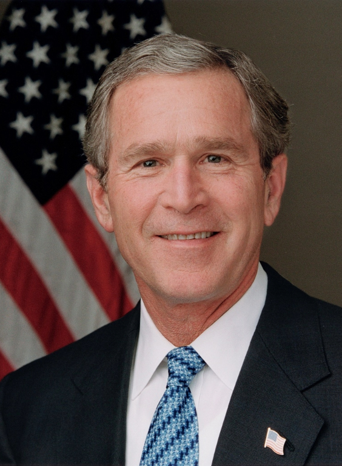
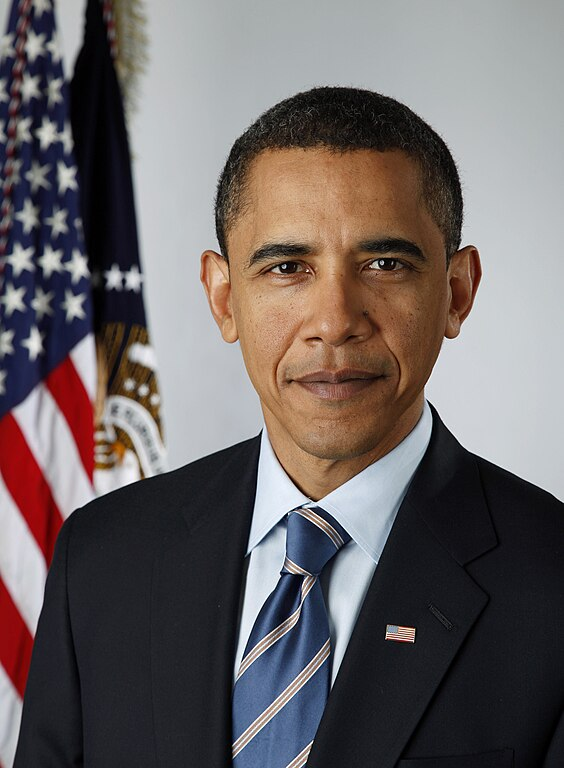
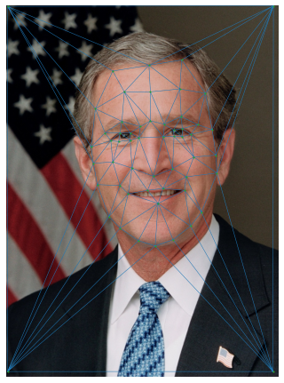
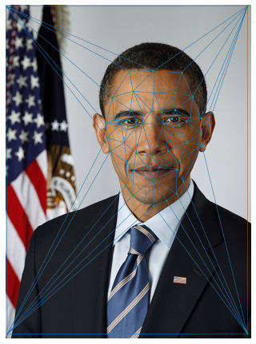
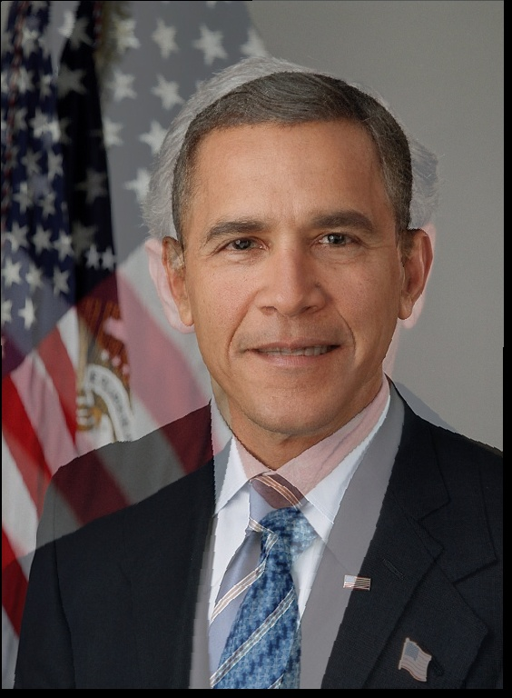
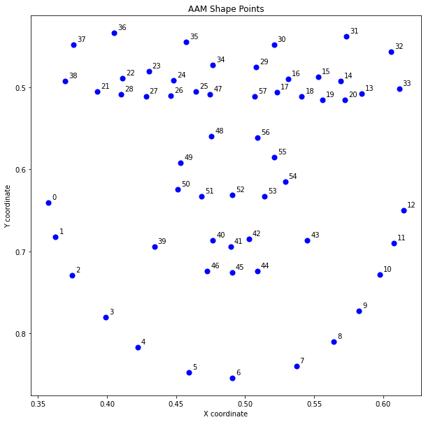
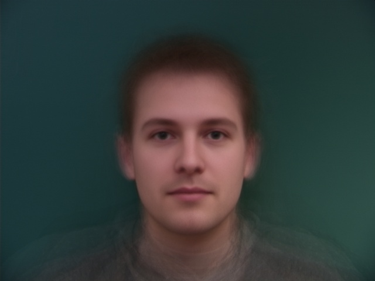

Part 3: The Morph Sequence
Now I have the mid-way face, I can create a morph sequence by morphing the two faces gradually
Here is the morph sequence between President Bush and President Obama in 30 intermediate steps

To morph one face to another, I need to label the corresponding points on both faces with the same order. I use a tool developed by another student in the previous semester to label them and obtain a correspondences json file.
With the correspondences, I take the mean of points and get the Delaunay Triangulation of the mean of points by using scipy.spatial.Delaunay.
Here are portrait pictures of President Bush and President Obama.
 Here are the Delaunay Triangulation of the mean of points from plotted on both pictures
 Now with the Delaunay Triangulation of the mean face, I can take the following three steps to comput the mid-way face:
In this section, I focus on warping both faces into the shape and averaging the colors. To warp two faces, I need to first warp each triangle from a triangle in the source image to its corresponding triangle in another image using affine transformation.
Here is a pseudocode of how I warp triangles
for each triangle in the Delaunay Triangulation:
compute the affine transformation matrix
create mask for the destination triangle
transform the coordinates from the destination triangle to the source triangle
warp the pixels from source image to destination image
return the warped image limited to the triangle's region
After warping triangles from both images, I cross-dissolve (blend) them into one final image. The result shows the morphing between President Bush and President Obama
Now I have the mid-way face, I can create a morph sequence by morphing the two faces gradually
Here is the morph sequence between President Bush and President Obama in 30 intermediate steps
I use the techniques of morphing through warping triangles to find the "mean face" of a population. I will work on the Danes dataset with 37 images already labeled. The original labels do not contain the corner points. I add them in for better quality.

First, I compute the average face shape of the whole population. Then, I morph each face to the average shape.
Finally, I morph all the morphed images together to obtain the mean face of the population
I warp my face into the mean shape and then the average face into my face's shape
Now I will create caricatures by extrapolating from the mean face. I follow the formula of new = myshape + alpha*(myshape-averageshape). Here are some caricatures with varying alphas
I will change my gender by morphing my face to the average Chinese woman face.